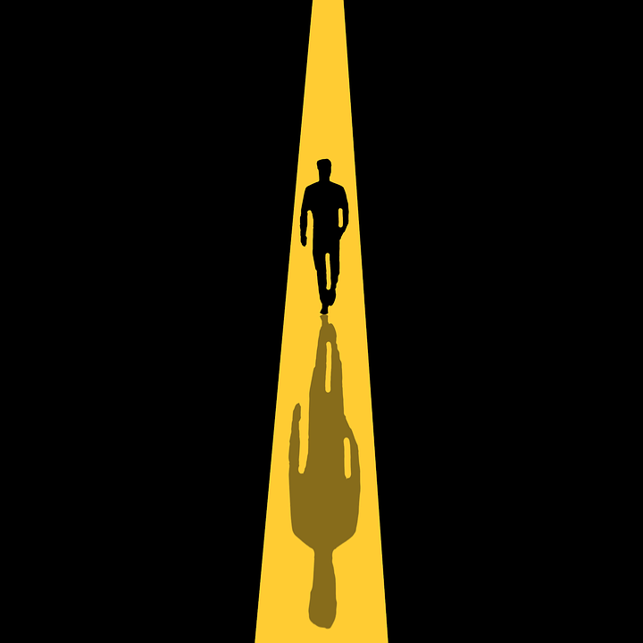

Quê? Quem? Por quê? – O propósito.
Há um ditado ou citação célebre, do qual não me recordo agora, que fala sobre formas gradualmente mais eficientes de aprendizado. É algo vagamente semelhante a: “quem lê, aprende; quem pratica, consolida; quem ensina, nunca esquece”. Certamente nunca ensinei sobre este ditado antes – ou provavelmente o teria gravado na memória! – mas é exatamente este o ponto: compartilhar conhecimento contribui para a sua melhor fixação. Este desejo de partilhar para que outros aprendam enquanto leem, ao mesmo tempo em que reforço o que compartilho, é uma motivação central por trás da criação deste blog. Mas partilhar sobre o quê? E quem está partilhando?

Eu me chamo Guilherme Boaviagem, sou cientista de dados e doutorando em Engenharia Elétrica. Através deste blog e da página do Instagram, quero compartilhar reflexões e sugestões sobre estudo e trabalho focado, visando um maior rendimento e melhor uso do nosso (seu e meu!) tempo. Fui professor universitário por pouco mais de um ano e sei o quanto o tempo de graduação pode parecer sem propósito, “levado com a barriga”, arrastando-se por semestres de disciplinas cujo conteúdo não entra na cabeça. Além disso, fui (e sou) aluno; também já desperdicei um tempo precioso, por não estudar como devia. Por fim, sabemos que nossa geração precisa estudar continuamente, porque nossos trabalhos são essencialmente de demanda cognitiva – exigindo criatividade, raciocínio, curva de aprendizado íngreme para adotar novas técnicas e ferramentas –, mas não fomos acostumados a cultivar a prática do estudo focado, com constância.
Aprender é uma habilidade. Como qualquer outra, pode ser aperfeiçoada pela prática e por métodos corretos.
Espero documentar aquilo que aprendo e experimento, e assim poder aprender e experimentar mais e melhor. Ao mesmo tempo, almejo que, de alguma forma, o blog possa ser útil aos leitores e visitantes desta página, sendo um canal que me permita lhes prestar um serviço de alguma forma enriquecedor. Sejam bem-vindos e… caso conheçam aquele bendito ditado do qual não me lembro direito, por favor me ensinem. Adoraria aprender.